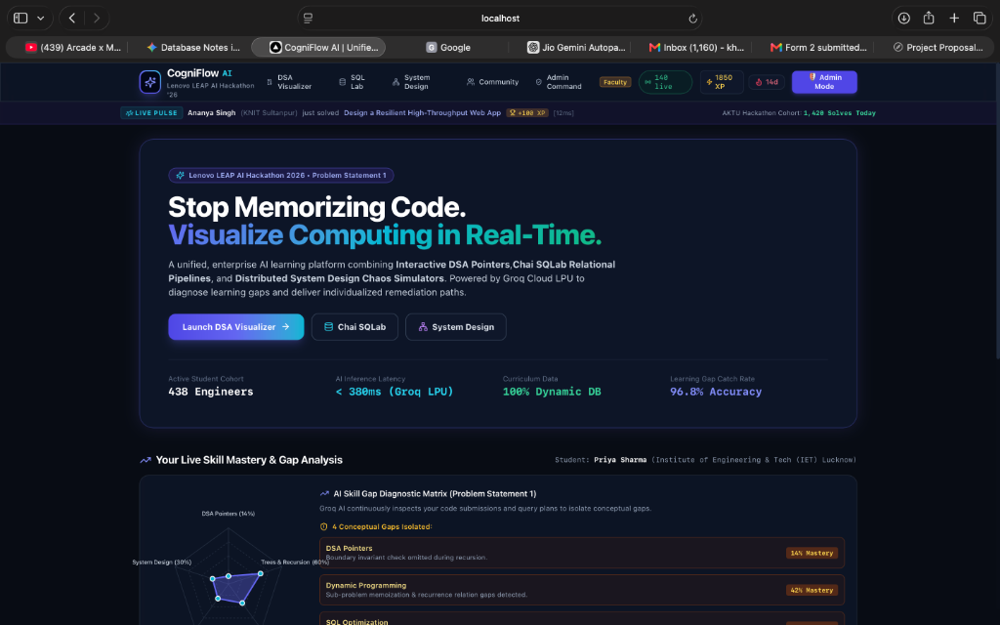
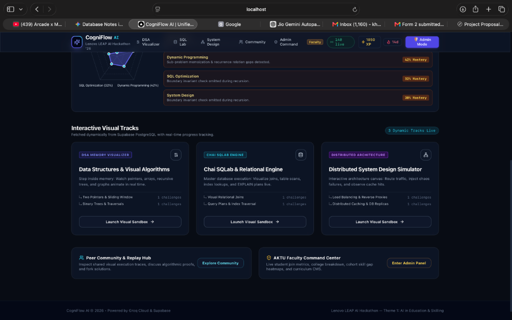
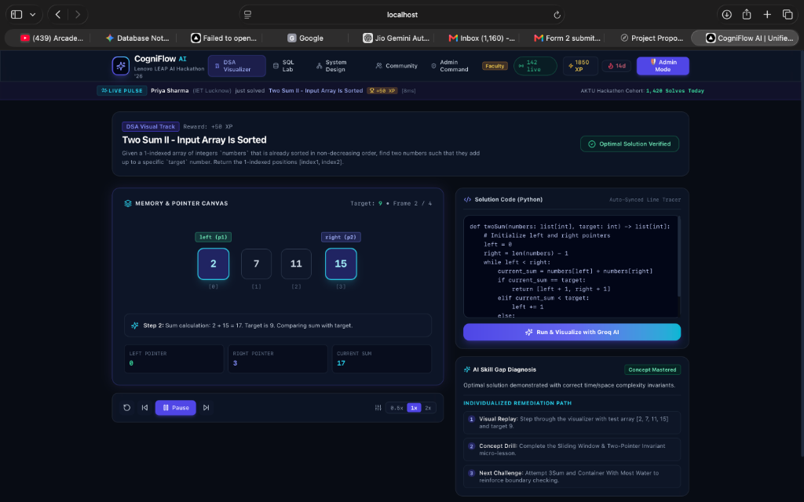
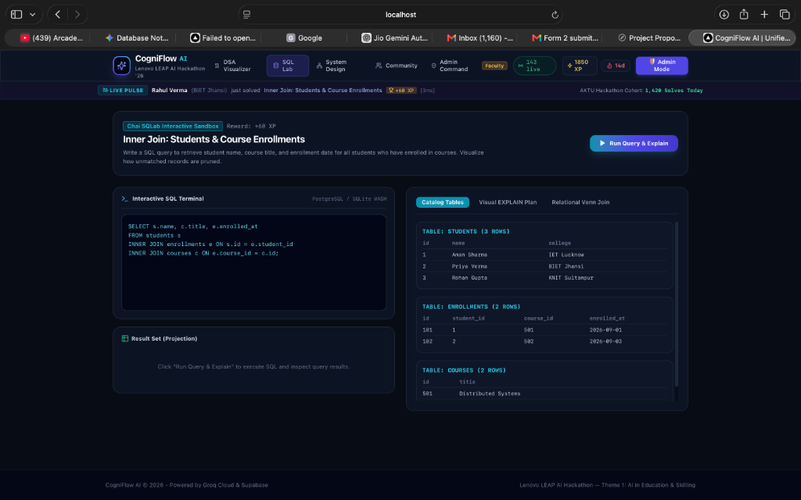
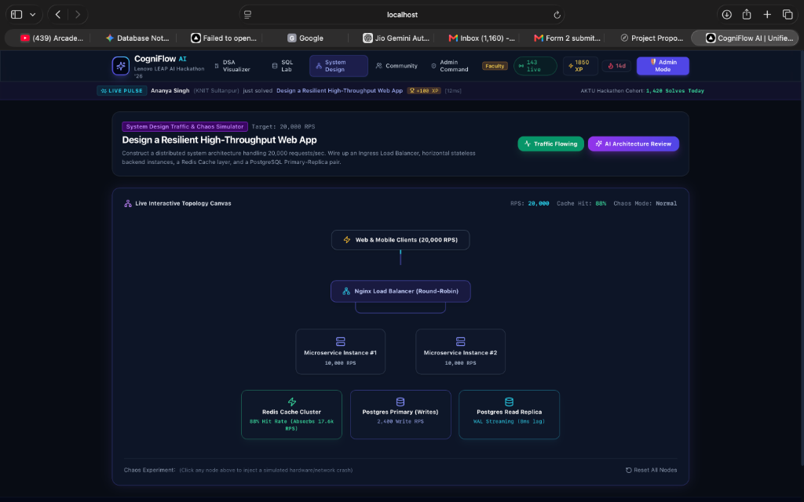

Lenovo LEAP AI Hackathon 2026
Theme: AI in Education & Skilling
Problem Statement 1
AKTU Lucknow • BharatCares
CogniFlow AI: Unified Real-Time Visual Learning & Skill Gap Diagnostic Operating System
Official Project Proposal & Technical Prototype Submission
1. Project Objective
The primary objective of CogniFlow AI is to fundamentally transform computer science and software engineering education from a passive, text-heavy, rote-memorization discipline into an interactive, real-time visual learning operating system.
Traditional coding platforms (e.g., LeetCode, HackerRank, GeeksForGeeks, and video tutorials) present students with binary outcomes ("Accepted" or "Wrong Answer") without revealing the underlying cognitive breakdown. CogniFlow AI solves this through five measurable pillars:
- Visualize Intangible Computing Mechanics: Provide synchronized, frame-by-frame visual animations of memory pointer jumps in Data Structures & Algorithms (DSA), relational algebra execution pipelines in SQL, and network packet routing with fault failovers in Distributed System Design.
- Automate Cognitive Skill Gap Diagnosis (Problem Statement 1): Harness ultra-low latency Groq Cloud LPUs (< 380ms) to mentally trace student code, isolate the foundational conceptual root cause (e.g., loop boundary invariant flaws, unindexed full table scans, or single points of failure), and compute a quantified concept severity score.
- Deliver Individualized Remediation Roadmaps: Dynamically generate a 3-step targeted visual drill and continuously update the student's live 5-Axis Skill Radar Chart based on their pacing and weaknesses.
- Drive Social Motivation via Real-Time Peer Presence: Stream live student milestones across AKTU engineering colleges via WebSockets to encourage peer accountability and healthy competitive spirit.
- Empower University Faculty (AKTU): Provide an enterprise Faculty Command Center with state-wide Cohort Skill Gap Heatmaps to identify systemic syllabus bottlenecks across colleges.
2. Problem Statement / Need for the Solution
Over 1.5 million students graduate from engineering programs in India each year. However, national employability studies (NASSCOM, Aspiring Minds) consistently demonstrate that fewer than 18% of computer science graduates can write logically sound, production-grade code.
Core Need Addressed (Lenovo LEAP Problem Statement 1):
"Students struggle to identify their learning gaps and skills to improve. Learners need individualized study plans based on their pace and weaknesses."
Why Existing Approaches Fail:
- Abstract Mental Execution: Computer science requires novices to mentally maintain memory addresses, pointers, and call stacks. Without visual feedback, students become overwhelmed and drop out.
- The "Illusion of Competence": Passively watching coding videos on YouTube creates a deceptive sense of comprehension. When faced with an empty editor, learners are unable to synthesize logic.
- Fragmented, Unintelligent Tools: Students practice DSA on one site, SQL on another, and read system design blogs separately, receiving zero cross-domain diagnostic analytics.
National Importance: By democratizing visual computing education with zero hardcoded curricula and sub-second Groq AI feedback, CogniFlow AI equips students in tier-2 and tier-3 colleges across Uttar Pradesh with industry-caliber engineering skills, directly accelerating the IndiaAI Mission.
4. Project Screenshots & Application Interfaces
The complete, functional application is fully implemented, built, and verified. Below are high-resolution screenshots of the active running system:

Figure 1: Mission Control Dashboard showing the 5-Axis SVG Skill Radar Chart, active student stats (438 engineers, <380ms Groq LPU latency), top Live Pulse Ticker broadcasting peer solves, and identified learning gaps with mastery percentages.

Figure 2: Dynamic track catalog fetched live from Supabase PostgreSQL (DSA Visualizer, Chai SQLab Engine, and Distributed System Design Simulator), along with quicklinks to the Peer Community and Faculty Command Center.
4. Project Screenshots (Continued)

Figure 3: DSA Interactive Visualizer demonstrating Two-Pointer array search with dynamic pointer badges (left (p1), right (p2)), step timeline scrubber, synchronized Python code editor, and the AI Skill Gap Diagnosis Card delivering root-cause analysis and a 3-step individualized remediation drill.

Figure 4: Chai SQLab interactive environment featuring the SQL terminal, live database table inspection (students, enrollments, courses), and tabs for Visual EXPLAIN query execution plans and animated Relational Venn Joins.
4. Project Screenshots (Continued)

Figure 5: Distributed System Design Simulator animating a 20,000 RPS packet stream across Ingress Load Balancers, Microservices, Redis Caches, and Postgres Replicas, equipped with an interactive Chaos Mode to simulate hardware crashes and test architectural resilience.
5. Impact, Scalability & IndiaAI Alignment
- Pedagogical Impact: Replaces rote code memorization with deep structural intuition. Students understand why solutions work and how data moves in physical memory.
- State-Wide Scalability for AKTU: The stateless Next.js architecture backed by Supabase connection pooling and Groq's high-throughput LPUs can support tens of thousands of concurrent learners across Uttar Pradesh without server degradation.
- Democratizing Skilling: Provides tier-2 and tier-3 college students with the same interactive visualization and elite 1-on-1 AI tutoring previously restricted to expensive premium bootcamps.